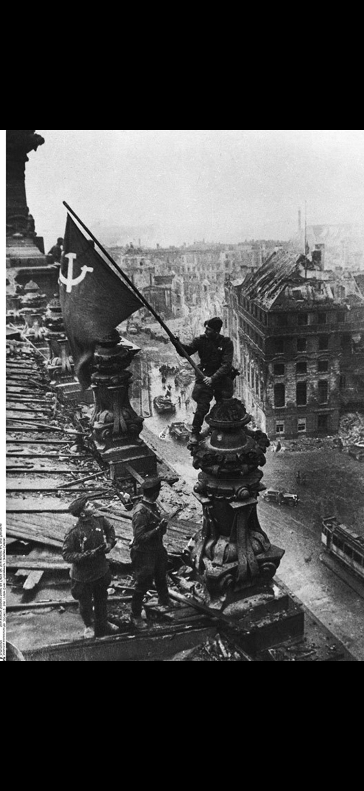
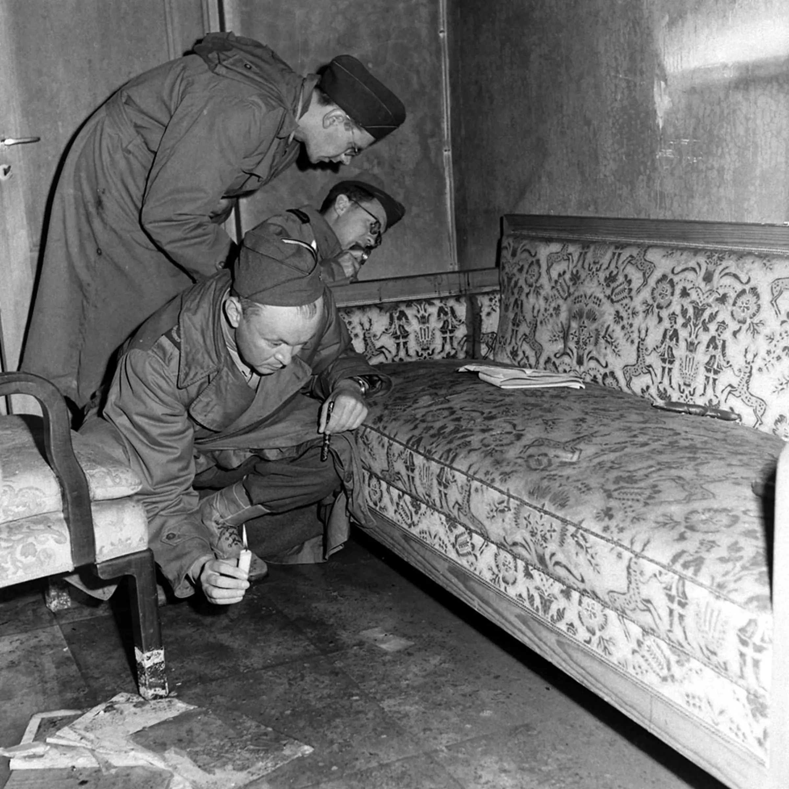
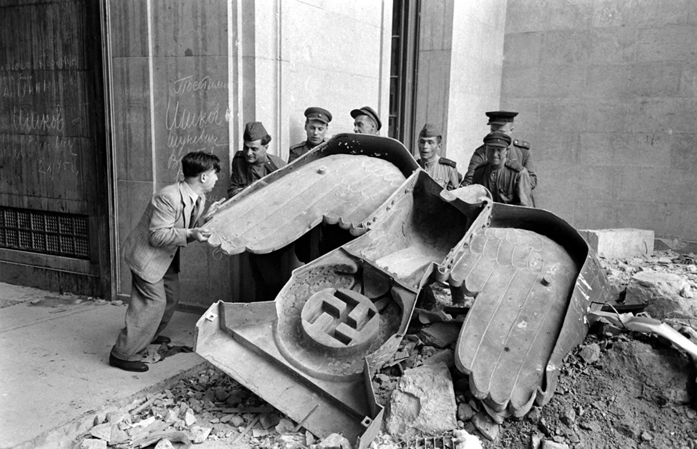

The Fall of Berlin: The Final Battle for the German Capital
Fought in late April and early May 1945, the battle for Berlin marked the climactic campaign of the European theater in World War II, ending the Nazi regime in Germany and paving the way for unconditional surrender.
Eastern Front Momentum and Final Defenses

By spring 1945, Allied forces were pressing deep into Germany from both east and west. Soviet armies had pushed across Poland and eastern Germany, while Western Allied forces crossed the Rhine and advanced across central and southern Germany.
Berlin carried major political, symbolic, and strategic weight as the seat of the German government, even as fuel supplies, industrial output, and trained manpower were severely depleted.
German defenses around the capital relied on layered anti-tank barriers, trenches, street barricades, flak towers, and mixed units—including Volkssturm militias, older reservists, Hitler Youth formations, and remaining regular troops.
Supply shortages and disrupted rail and road links limited how effectively defenders could rotate units or replace lost armor and artillery.
The Soviet Offensive and Encirclement

On April 16, 1945, major Soviet formations—including the 1st Belorussian Front under Marshal Georgy Zhukov and the 1st Ukrainian Front under Marshal Ivan Konev, supported by the 2nd Belorussian Front to the north—launched the final push toward Berlin across the Oder and Neisse rivers.
Early assaults encountered determined resistance along the Seelow Heights east of the city before heavy artillery, armor, and infantry breakthroughs created openings and enabled Soviet pincers to encircle Berlin from north and south in late April.
Within the city, intense street and building fighting unfolded around canals, bridges, rail yards, and central districts as defending units fought from block to block.
Artillery barrages, close-quarters combat, and rubble-choked streets made movement hazardous for attacking armor and infantry alike.
Collapse of the Regime and Postwar Consequences

As Soviet forces closed in on central Berlin in late April 1945, command cohesion within the German leadership fractured amid heavy bombardment and shrinking territory.
Adolf Hitler died by suicide in his Berlin bunker on April 30, 1945, shortly after designating successors, while remaining commanders in the city faced hopeless tactical conditions.
On May 2, 1945, organized German resistance in Berlin ended with the city's surrender to Soviet forces, followed days later by Germany's overall unconditional surrender taking effect on May 8, 1945.
The battle left severe physical damage across Berlin and deep hardship for civilians sheltering in cellars and ruins, while subsequent occupation zones divided Germany and Berlin and shaped postwar Europe and early Cold War tensions.
Operational planning on the Soviet side involved massive concentrations of artillery, armor, engineering troops, and aircraft across a broad front. Searchlights, smoke screens, pontoon bridges, and concentrated barrages were used to breach river lines and fortified positions while sustaining momentum toward the center of the city.
Urban combat inside Berlin presented sharp tactical challenges for both attackers and defenders. Multi-story masonry buildings, basements, subway tunnels, rubble piles, and canal crossings limited lines of sight and turned ordinary streets into tight bottlenecks where infantry, engineers, and anti-tank teams fought at close range.
Defending forces included a patchwork of battered Wehrmacht and Waffen-SS units, police formations, Volkssturm battalions, and teenage Hitler Youth members. Shortages of ammunition, fuel, and coordinated command meant many local strongpoints fought in isolation as Soviet columns pushed deeper into the city.
Air operations and artillery fire reshaped Berlin's skyline and infrastructure over the final weeks of the war. Bombing raids and heavy shellfire damaged power plants, water mains, tram lines, and historic buildings, leaving vast stretches of the capital in ruins.
Civilians faced acute hardship as fighting closed in on residential neighborhoods. Families crowded into cellars and underground stations with limited food, sanitation, and medical supplies, waiting out artillery duels and street skirmishes while rumors and propaganda gave way to military reality.
In the final days of April, Soviet forces fought toward key government and administrative districts in central Berlin as political and military authority inside the regime collapsed. Following Hitler's death on April 30, efforts to negotiate a ceasefire or break out of the encircled city faltered amid ongoing combat.
When General Helmuth Weidling ordered the Berlin garrison to cease organized resistance on May 2, 1945, it brought the battle for the capital to a close and marked the effective end of Nazi rule in Germany ahead of the formal unconditional surrender days later.
The capture of Berlin carried profound geopolitical consequences for postwar Europe. Allied agreements divided Germany and Berlin into occupation zones, setting up administrative arrangements that soon reflected deepening Cold War divisions between the Soviet Union and Western Allies.
By April 1945, Germany's strategic position had deteriorated across every front. Allied forces were advancing deep into western and southern Germany, while Soviet armies stood along the Oder and Neisse rivers with massive concentrations of artillery, armor, and infantry poised for the final push.
Crossing heavily defended river lines and the Seelow Heights required careful timing and heavy fire support. Engineers laid pontoon bridges and cleared mines under fire while armored and motorized formations pressed forward to close the encirclement around the capital.
Inside Berlin, urban terrain shaped every phase of the assault. Wide boulevards, rail embankments, canals, parks, and massive stone buildings forced attacking units to adapt tactics for close-range fighting, clearing upper stories, cellars, and courtyards amid debris and smoke.
German defenses grew increasingly fragmented as encirclement tightened and communications faltered. Improvised units, depleted divisions, and local strongpoints fought under severe shortages of fuel, ammunition, and medical supplies while leadership in the capital lost touch with outer formations.
Daily life for Berlin's remaining residents was marked by fear, scarcity, and disruption. Many people spent long hours underground in cellars and subway stations, facing damaged utilities, limited rations, and uncertainty as fighting moved street by street through the city.
As Soviet forces pushed into central Berlin at the end of April, the collapse of the Nazi leadership accelerated. Following Hitler's suicide on April 30, remaining officials and military commanders confronted the reality that further resistance could not alter the outcome of the war.
The surrender of Berlin on May 2, 1945, ended major combat in the capital and symbolized the defeat of Nazi Germany in Europe, followed shortly by formal unconditional surrender across German forces in early May.
In the years that followed, Berlin's division into occupation sectors reflected the broader split of Europe and became a central stage for postwar recovery, diplomacy, and Cold War rivalry.
Supply lines and medical services faced severe strain during the final push into the capital, as damaged roads, destroyed bridges, and heavy casualties tested logistics on both sides of the front.
As outer defenses collapsed and fighting reached central districts, remaining German commands struggled with failing communications and shrinking options, bringing an end to organized resistance in early May.
Rebuilding the city after May 1945 meant clearing vast amounts of rubble, restoring basic services, and managing displaced populations while Allied authorities established occupation zones across Germany.
Rail yards, bridges, and river crossings across the city saw repeated clashes as attacking formations sought routes into central neighborhoods while defenders tried to slow armored thrusts.
For historians studying the end of World War II in Europe, the fall of Berlin captures both the military collapse of the Nazi regime and the start of postwar division.
Clearing rubble, restoring transport routes, and organizing daily relief became urgent tasks the moment fighting subsided, marking both the end of the war in Europe and the beginning of a divided era in Berlin.
Clearing rubble, restoring transport routes, and organizing daily relief became urgent tasks as fighting subsided, marking the end of the war in Europe and the start of a divided era in Berlin.
Surviving residents and occupying forces faced months of recovery ahead as the ruined capital adjusted to peace and division.